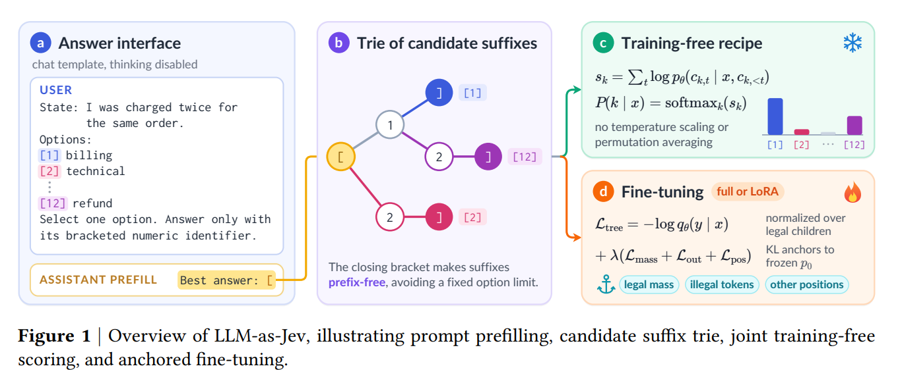
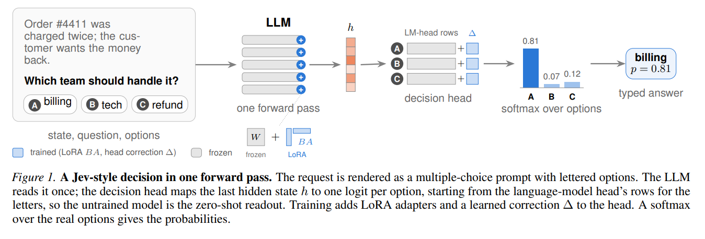

1.1、背景
不写文字的 AI：如何训练、如何计算、如何复现、如何选型
2026 年 9 月 15 日，TypeSafe AI 发布了名为 Jev 的 System One 模型：对调用方声明的选项集合，模型经单次前向计算直接返回带类型的决策与概率分布，不生成任何文本。其后公开生态快速扩张，截止10月15号，短短一月，arxiv上相关研究论文就不下百篇，直接引爆了决策模型与系统1决策等相关研究方向。在 github 上相关复现与开源项目接连涌现，广受关注。
1.2、核心结论
那么什么是Jev模型？就技术范式上来讲，Jev 不是一个新的生成模型类别，而是一层"决策读出层"：
- 对调用方声明的选项集合，用单次前向直接读出带类型的概率分布、不生成决策文本；
直观理解：不"回答"问题，对用户声明/指定的选项集合，它只返回每个选项的概率！
它的技术内核是把"校准"写进目标的严格适当评分规则，而冻结的通用 LLM 经读出协议即可达到同型能力。以下是五条核心技术判断，可以将这类技术范式的边界画得更清楚：
- 范式实质是读出层的改变（带校准的类型概率）与创新而非新的模型：
"是否采用决策模型范式"与"是否采用 Jev 商业产品"是两个独立决策，前者有大量公开证据，后者只是商业选型；
目前在技术复现上，基本可以确定“开源模型可在零训练下追平效果、微调后可以进一步超越闭源 Jev”；
【LLM2Jev，2610.02076，微软】证明冻结的通用 LLM 经适当读出协议即可达到同型能力；
提出 LLM-as-Jev 框架，在不修改模型架构、分词器或词汇表的前提下，通过结构化前缀（
Best answer: [）与括号数字标识符（[1],[2]等）从next-token概率中提取决策分布；

【Inner Jev/Jeff，2610.17205，Harvard】给出了"无需 Jev 专用架构与 RLCD"的极简实证——把现成开源指令模型（Gemma 4 31B）的答案字母 logit 直接读出当决策概率，零样本即可逼近 Jev（79.6 vs 80.1）；再花约 5 个 GPU-小时做一轮 rank-32 LoRA 微调（400 步，不用 RL、不用 reward model），分数到 84.4、反超 Jev 4.3±2.5 —— 论文消融进一步显式其微调增益几乎全来自 LoRA 让主干学会读判断，decision head 本身近乎多余；
信息：

这个工作进一步削弱了"专用架构+RLCD 构成壁垒"的隐含预期：
决策读出作为范式是低成本、可复现的，Jev 的价值转向开箱即用与接口契约、而非训练配方不可替代；
但需要进行进一步验证；
- 与生成式模型相比，成本与延迟优势明显（同模型对照读出快 5.21 倍、官方输入 $0.042/MTok、输出免费），但准确率优势不属于接口本身：
【2609.32160，早期证据地图】对目前出现的15类 Typed Decision Models（TDMs）开源系统独立审计发现 typed 接口相对同 backbone 的 label-logprob 读出无独立精度收益；
| 模型 (Model) | 骨干网络 (Backbone) | 读出机制 (Readout) | 训练方式 (Training) |
|---|---|---|---|
| this-that-model-1.0 【2609.23886】 |
1.88B 混合线性注意力解码器 (hybrid linear-attention decoder) | 答案槽隐藏状态与单token选项标签的输出嵌入行进行评分；受限 softmax (restricted softmax) | 全量微调；交叉熵 + Brier 损失 |
| JevLite 【2609.23959】 |
Qwen3-4B, LoRA | 对允许的标签 token logits 进行 Softmax | 交叉熵 + Brier 损失；温度缩放 (temperature scaling) |
| Visual Jev 【2609.25845】 |
Qwen3-VL-4B/8B, LoRA | 选项字母的 LM-head logits，在候选项上重新归一化 | 答案 SFT（监督微调）；尝试了专用类型头但最终放弃 |
| SemIf-4B 【2609.24574】 |
Qwen3.5-4B, 冻结 (frozen) | 选项字母 logits | 无 (None) |
| Qwen3-0.6B-RLCD 【2609.24574】 |
Qwen3-0.6B-Base | 字母 token 读出 | 用于校准决策的 RL（强化学习）（第三方复现） |
| PixelJev 【2609.29283】 |
Qwen3.5-2B/4B, 可选 LoRA | 第一个答案位置的选项字母 logits，限制在候选槽位内 | 少样本 LoRA；在留出数据 (held-out data) 上拟合温度 |
| Laya 【https://github.com/NandhaKishorM/laya】 |
ModernBERT-large | 放置在每个选项处的掩码标记 (mask marker) 的上下文嵌入 | n.r. |
| Open-Jev 【2609.26758】 |
DeBERTa-v3-large | 对选项名称与定义的表征做均值池化后评分 | n.r. |
- System1-Arena【2610.21244 ，评估基准】 佐证：Jev 72.6% vs GPT-6 Luna 71.2%、Brier 0.349 更优、延迟约 1/4；
《System1-Arena: Which Decisions Can Be Left to System 1?》该工作主要讨论的是：哪些离散决策可以交由快速的 System-1 模型（单次前向传播返回概率分布）处理，哪些仍然需要慢速的、基于生成式推理的 System-2 大语言模型（LLM）？得到的总体结论为：
在非智能体（non-agentic）任务上：最大的 System-1 模型（如 Decision-2.0-Vega-27B、Jev）在准确率上已能匹配甚至超过低推理强度的闭源 LLM（如 GPT-6 Luna），且概率校准更好（Brier 分数更低），延迟仅为四分之一；
需要最高精度的场景：推理型 LLM（如 Claude Opus 5.5）仍然最准确，但成本约为快速 LLM 的 70 倍；
智能体（agentic）与闭环任务：大参数量的开源 LLM 在长程闭环任务中成功率最高（如 Gemma-4-31B 达 32.9%），而小型 System-1 模型成功率极低（不超过 3.1%），表明长程规划和错误累积仍是 System-1 的显著短板；
》》 通过 30 个模型的系统对比，明确 System-1 模型的适用边界：在多数静态决策上，大型 System-1 模型以更低延迟、更好校准、更低成本匹配快速 LLM；但在需要最高精度或长程规划的复杂场景中，System-2 推理仍不可替代。
- 置信度/概率校准是决策模型范式的主要核心优势，但也是最需要本地验证的性质：
它本身是"模型 × 分布 × prompt × 版本"的联合性质，ECE 合格不等于概率可逐点消费；
存在过度自信的风险在尾部极端分布（如System1-Arena 实验评估中，Gemma-4（31B） 在 87% 的题目给出了 ≥0.999 的概率），也就是说整体ECE校准合格的模型依然可能在尾部极端过度自信；
同时System1-Arena也证实了—— "拿通用指令模型原始 logit 当概率"的典型后果就是校准概率（Brier分数）会很差（即便精准指标高），这主要是因为通用模型并未经评分式校准训练，logits 会被压成尖锐分布 —— 只有经评分训练的决策头才自带校准，裸读出/小模型的极端置信必须上线前在自有负载上重新校准；
- 实践中级联路线是当前研究与实践证据下的主流落地形态：
已有相互独立的研究（阈值公式 / Jev-LiteMAS / JevCoder / Selective Reasoning）都复现支持了这一结论；
JevAgentHarness 按决策点拟合阈值 \(τ(d)=q(L)−ΔC/V\)（2610.21412）解决何时回退/触发的问题；
Jev-LiteMAS 通过路由+评审分离（2610.21411）解决选谁/路由去哪里的问题；
JevCoder 通过代码修复委派（2610.19596）把可记录判断交廉价 judge/委派；
Selective Reasoning 将这种范式用于推理深度早停（2610.19644）解决何时停思考/深度的问题；
已公开的生产场景无一把最终决定权单独交给决策模型【见2609.29769】；
- 就生产系统安全来讲，安全面已经从"输入侧"扩展到"程序消费侧"：
【输入侧目前是最薄弱的安全面】目前证据表明：
对封闭 choice 接口做对抗攻击，其攻击成功率 ASR（Attack Success Rate） 仅 1.8% 相对抗【《Decision Hijacking: Prompt Injection Attacks on Jev’s Typed Probabilistic Decisions》，2609.28613】；
Jev 是受限选择接口：不自由生成文本，只能从预先固定的选项里选一个决策，附带概率输出（closed choice /typed probabilistic decision interface）；
论文证明了，尽管限制输出为固定候选集，但并不等于就免疫了Prompt注入攻击，概率分布依然会被恶意内容偏移，只是很难稳定劫持最终选择；
简单来讲，攻击者往输入里塞提示注入话术，想骗它固定选到恶意选项，但实测真的能稳定骗成功的概率只有 1.8% —— 两个方面：能被引导偏移的概率相对高些，稳定偏移到特定目标选型上就比较难些；
【2609.30243】不改变问题与选项、仅向上下文添加约 31 个词的自然背景句，可翻转 61.4% 的初始正确决策；
【2609.26758】仅对调选项名与定义的绑定，可使 marker-token 读出的模型 AUC 从 0.94 反转至 0.23；
【2609.31142】向 state 注入一条未经核实的旁观者意见可翻转 12.1% 的决策；
【威胁面向消费侧转移】程序消费的是决策的概率分数数值而非接口标签：
【2610.18612】表明，通过决策劫持， 在 228 个常用的真实 Jev 应用和 2273 个测试用例中，81.5% 的用例都出现了决策翻转，其中 98.6% 的决策翻转会导致潜在的下游安全影响；
也就是说攻击者根本不必让标签翻转，只需要影响数值即可 —— 威胁面从"文本侧接口"扩展到"程序消费数值阈值口"；
1.3、快速决策
以下是进行实际技术选型与决策的核心关切：
它是什么？ 一个决策读出层，不是新模型类别，主要是对调用方声明的选项集做单次前向、直接输出带类型答案与概率分布的结果，不生成任何文本：
内核可追溯至 P(True) 读出（2207.05221）与严格适当评分规则理论；
冻结的通用 LLM 经适当读出协议即可复现同型能力；
该怎么训练？ 目前公开生态有两条主路径：
零训练读出：即冻结基座、只改读出协议与后处理温度，典型：SemIf/LLM2Jev/reflex等；
以严格适当评分规则为奖励的强化学习：即 RLCD/RLCR 类的训练范式，官方 Jev 声明走此路线但配方未公开，学术版 RLCR（2507.16806）与开源复现 OpenJev-RLCD（2609.38850）证明了校准能力可做进模型；
实际中间状态还有其他路线，但基本就是这两种方案的混合，不再说明；
各路线差在哪？ 可以按照结果读出的位置分三类：
以 Laya与von 为代表的“双向编码器+决策头”范式，特征为：端侧低延迟、上下文短；
以 SemIf/kev 为代表的“因果解码器字母/logit 读出”范式，特征为：零成本、受单 token 上限约束；
以 Jeva 为代表的“原生 decision-native”范式，其特征为：在单一架构内系统性地统一了空感知、排列不变性、选项可扩展性与跨请求缓存等结构化决策计算；
根本差异在于：选项的隔离方式、是否重训基座与校准位置；
技术选型该怎么选？ 按成本/延迟、校准需求、数据主权等维度进行决策：
延迟优先选自托管小型编码器（laya-mlx 端侧约 5ms）；
概率直接驱动动作则必须经评分校准训练，并必须在自有负载数据上拟合温度；
数据不能出域选纯本地推理，否则托管 API + 置信度级联是最简单的方案；
无论哪条路线，在落地时必须注意的三条纪律：
上线前必须做影子评估【系统与工程实践】
即正式流量切过去之前，先跑影子（旁路并行） —— 线上真实请求同时送给旧系统 + 这个封闭 choice 模型，但模型输出不接管业务决策、不生效，只默默记录预测结果、概率分布、异常 case；
定位：测的不只是正常样本，重点灌提示注入、混淆 prompt、边界样本，统计：攻击下目标选项概率漂移多少、会不会偶发劫持、哪些输入容易踩决策边界；
目标：提前发现 “看着 ASR 很低，但少数场景概率悄悄偏移” 这类隐性风险，而不是等上线后才撞见偶发劫持；
关键点：影子阶段要和真实线上分布对齐，不能只用干净测试集。
阈值在本地标注上冻结【业务严格一致】
用来判定决策的置信阈值，不能上线后凭感觉调、不能在模型侧动态自动更新，阈值必须基于一套固定的离线标注数据集一次性定好并锁定；
定位：封闭 choice 是靠各选项的概率 + 阈值做分支（比如置信高于 0.8 才自动放行，低于就转人工）；
如果阈值不冻结：
后续迭代模型、换版本、微调后概率分布整体平移，阈值跟着乱动，安全基线直接失效；
攻击者哪怕只有小幅概率漂移，也有可能跨过阈值劫持结果；
冻结&要做版本固化：阈值和标注集绑定，变更阈值属于一次正式变更，要重新走一轮对抗评估。
选项名与顺序探针必须进行测试【安全面与鲁棒性】
专门做探针测试，验证模型会不会被【选项叫什么名字、选项排列先后顺序】带偏，这是封闭 choice 接口独有的问题；
两类探针：
选项名探针：改选项文字别名、同义替换（比如把 “拒绝” 改成 “拦截”），看模型概率会不会异常变化 —— 很多模型会对关键词敏感，名字本身就自带偏见；
顺序探针：打乱候选选项的排列顺序，保持选项含义不变，看输出概率和最终选择是否稳定 —— 大模型普遍存在位置偏置，靠前选项更容易被选中；
目标：摸清外部风险/攻击/扰动对决策的影响【呼应论文2609.28613与上述的第5条判断】